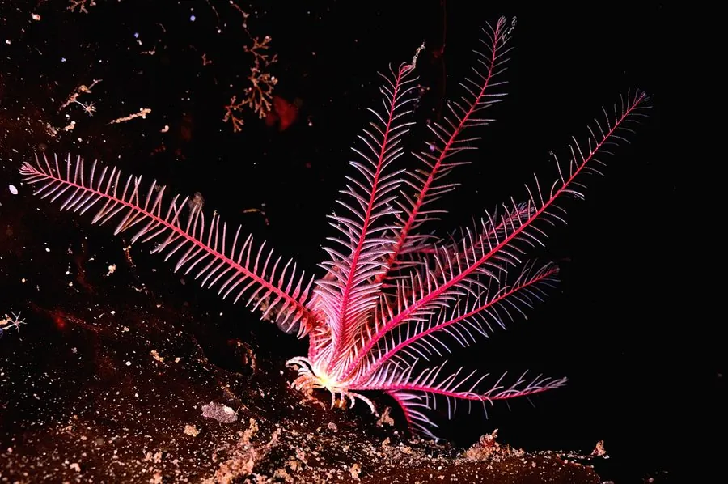

其他无脊椎动物 · 动物界
海百合 Antedon bifida

外形像植物的海百合，腕多达 10 条，成体无柄，攀附在岩石上滤食浮游生物，是棘皮动物中的古老类群。
- 分类
- 门棘皮动物门纲海百合纲目羽星目科羽星科属海百合属
- 栖息环境
- 东北大西洋的岩礁和砾石底，靠卷枝攀附生活
- 地理分布
- 东北大西洋和地中海，从英国到北非沿岸
- 保护级别
- 暂无评估；可作为环境指示生物
物种志
海百合的外形像一株小植物，身体中央是杯状体，伸出约 10 条细长的腕，腕两侧排列着羽状的小枝，颜色多为红色、橙色、黄色或褐色，展开时像一朵花。它属于海百合纲，是棘皮动物中形态最古老的一类。
它生活在东北大西洋的岩礁和砾石底，水深从浅海到较深处，成体没有柄，靠腕基部的卷枝攀附在岩石、海藻或其他生物上，用羽状腕捕捉浮游生物和有机颗粒。海百合的幼体有柄，附着后经过变态，成体才脱离柄自由生活。它分布于东北大西洋和地中海，常成群出现。海百合对水质和底质变化较敏感，可作为海洋环境监测的指示生物之一。海百合在古生代海洋中曾非常繁盛。
形态与习性
- 食性用羽状腕捕捉浮游生物和有机颗粒
- 形态杯状体伸出约 10 条羽状腕，像一朵花
- 生活史幼体有柄，变态后成体无柄自由生活
- 栖息岩礁和砾石底，靠卷枝攀附
- 分布东北大西洋和地中海
- 生态对水质和底质变化敏感，可作指示生物
趣味知识
- 海百合看起来像植物，其实是棘皮动物，和海星、海胆是近亲。
- 它幼年时有柄固着，成年后脱离柄自由生活。
- 海百合的腕展开像一朵花，用来捕捉水中的浮游生物。